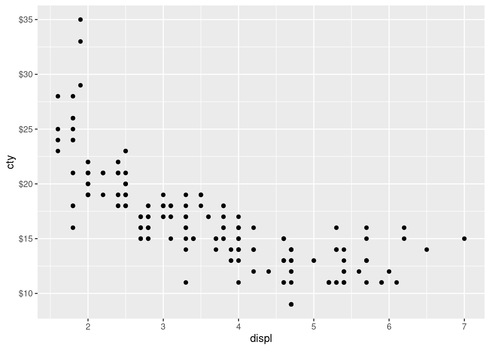

Code
palmerpenguins::penguins |>
readr::write_csv("./data/palmer-penguins.csv")palmerpenguins::penguins |>
readr::write_csv("./data/palmer-penguins.csv")library(tidyverse)
mpg |>
ggplot(aes(displ, cty)) +
geom_point() +
scale_y_continuous(labels = scales::label_dollar())
Note: change the names of the columns from the example to match the column names from the dataset in the R package.
data = FileAttachment("./data/palmer-penguins.csv").csv({ typed: true })
viewof bill_length_min = Inputs.range(
[32, 50],
{value: 35, step: 1, label: "Bill length (min):"}
)
viewof islands = Inputs.checkbox(
["Torgersen", "Biscoe", "Dream"],
{ value: ["Torgersen", "Biscoe"],
label: "Islands:"
}
)
filtered = data.filter(function(penguin) {
return bill_length_min < penguin.bill_length_mm &&
islands.includes(penguin.island);
})Inputs.table(filtered)Plot.rectY(filtered,
Plot.binX(
{y: "count"},
{x: "body_mass_g", fill: "species", thresholds: 20}
))
.plot({
facet: {
data: filtered,
x: "sex",
y: "species",
marginRight: 80
},
marks: [
Plot.frame(),
]
}
)